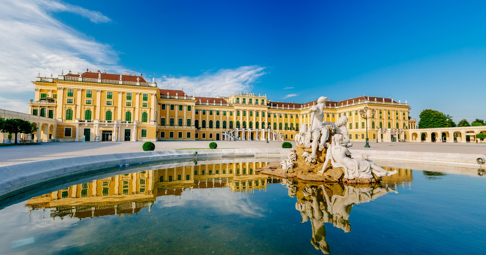
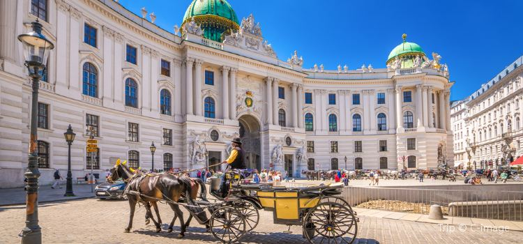

VIENA
Unul dintre cele mai frumoase orașe din Europa
Site menu:
Palatul Schonbrunn
Palatul Schönbrunn (în germană Schloss Schönbrunn) este o fostă reședință imperială de vară în stil rococo și cu 1441 de camere, aflată în prezent în Viena, Austria. Fiind unul dintre cele mai importante monumente culturale din țară, el a fost începând cu anii 1960 unul dintre cele mai importante obiective turistice din Viena. Palatul și grădinile ilustrează gusturile, interesele și aspirațiile monarhilor din familia Habsburg. Palatul se află la vest de centrul orașului Viena, în cartierul Hietzing. Până în 1642 se numea "Katterburg". 
Palatul Belvedere
Palatul Belvedere din Viena se află în mijlocul unui parc splendid. Palatul a fost construit pentru Eugen de Savoia, de către J.L. von Hildebrandt, un foarte cunoscut arhitect baroc al perioadei respective. Belvedere înseamnă un loc din care se poate vedea frumusețea, iar Palatul Belvedere oferă o priveliște minunată asupra orașului vechi, din grădinile sale.

Palatul Hofburg
Timp de peste şapte secole, ţara a fost guvernată de Habsburgi, din Hofburg. Hofburg-ul a fost locuit de familia imperiala pana in 1918. Initial a fost o cetate medievala din secolul al 13-lea, transformata ulterior in splendida resedinta a habsburgilor odata cu accesul acestora la putere si cu extinderea dominatiei lor. Astăzi, în Hofburg se află sediul prezidenţial, un centru de conferinţe renumit şi numeroase colecţii de artă. 